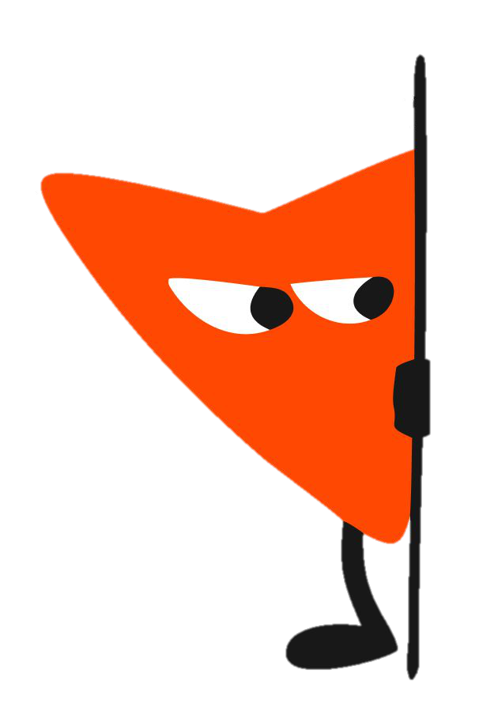

Сегодня — раунд 1, соло: один кейс, ваша карта проблем, встреча с клиентом и три разговора в свободном порядке. Без права спросить ИИ, что делать дальше.
Кейс
Кейс одинаков для всех — условие сравнимости. Персонализируется то, как разворачивается материал, а не сам кейс.
Поиск и реклама на домашнем рынке: рекордная доля и довольное правление — но конкуренты, интерфейсы и новый собственник меняются быстрее, чем стратегия.
«В четверг вечером позвонил Кирилл Агеев…»
Так начинается кейс. Дальше — пакет документов и разворачивающаяся история: новый акционер с параллельной повесткой, отток людей, гонка технологий и развилка, у которой нет очевидно правильного ответа.
Сегодня
Порядок первых двух шагов фиксирован для всех. Дальше — холл: три разговора в любом порядке. Порядок свободный, но пройти нужно все три — только тогда можно финализировать стратегию. Держитесь общего бюджета времени на раунд.
Кейс и 8 приложений. Выделяете проблемы прямо в тексте, описываете каждую своими словами и показываете, как они связаны.
Раскладываете свою карту по приоритетам, объясняете клиенту, почему первым идёт именно это, и держите выбор под давлением — отступить и переиграть нельзя.
«Коридор Лемеха», «Очередь в „Прожектор"», «Черновик к мартовскому комитету» — заходите в любом порядке. Когда готовы — финализируете стратегию, и раунд 1 закрыт.
Ноутбук на весь раунд. Большой объём текста, выделение, заметки, сборка карты — на телефоне не работает.
Ориентировочно до 2 часов. Жёсткого лимита нет — важнее разобраться, чем уложиться в тайминг.
Три разговора в свободном порядке — пройти нужно все три: каждый раскрывает свою грань вашей позиции, и без них стратегию не финализировать.
Регистрация занимает минуту и выдаёт номер участника.
